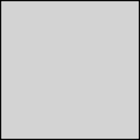
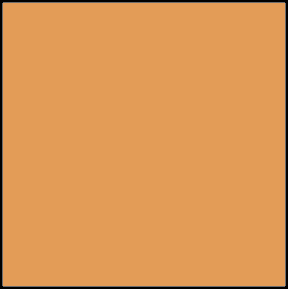
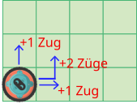
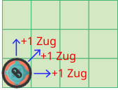
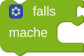
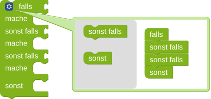

Course
Der Roboter steht auf einem Gitter. Auf einem der Felder steht eine graue Tafel

.Rechts vom Roboter steht eine Zahl. Die Zahl sagt, wie viele Schritte die graue Tafel entfernt ist.
Der Roboter soll auf die Tafel die Anzahl der Züge schreiben, die benötigt werden, um die Tafel zu erreichen. Ein Schritt nach rechts zählt als ein Zug. Der Startpunkt für die Zählung ist das Zahlenfeld

.Rechts neben dem Roboter stehen zwei Zahlen auf zwei Feldern. Die linke Zahl beschreibt, wie viele Schritte nach rechts die graue Tafel entfernt ist. Die rechte Zahl beschreibt die Schritte nach oben.
Der Roboter soll auf die Tafel die Anzahl der Züge schreiben, die mindestens benötigt werden, um die Tafel zu erreichen. Ein Schritt nach rechts oder oben zählt als ein Zug . Der Startpunkt für die Zählung ist das rechte Zahlenfeld .
Weitere Hinweise:

Rechts neben dem Roboter stehen zwei Zahlen auf zwei Feldern. Die linke Zahl beschreibt, wie viele Schritte nach rechts die graue Tafel entfernt ist. Die rechte Zahl beschreibt die Schritte nach oben.
Der Roboter soll auf die Tafel die Anzahl der Züge schreiben, die mindestens benötigt werden, um die Tafel zu erreichen. Ein Schritt nach rechts, oben oder diagonal (also ein Feld nach rechts und eines nach oben) zählt als ein Zug. . Der Startpunkt für die Zählung ist das rechte Zahlenfeld .
Weitere Hinweise:

Eingeschränkte Bausteine:
Um eine reine Sequenz an Anweisungen oder eine Lösung, die nur auf das Bestehen von Testfällen abzielt, zu vermeiden, stehen nur zwei -Baustein zur Verfügung.
Fallunterscheidung:
Du kannst der

über das blaue Zahnrad weitere Fälle hinzufügen (oder entfernen), indem du sie vom linken grauen Kasten zum rechten weißen Kasten hinzufügst (oder aus dem weißen Kasten heraus ziehst):